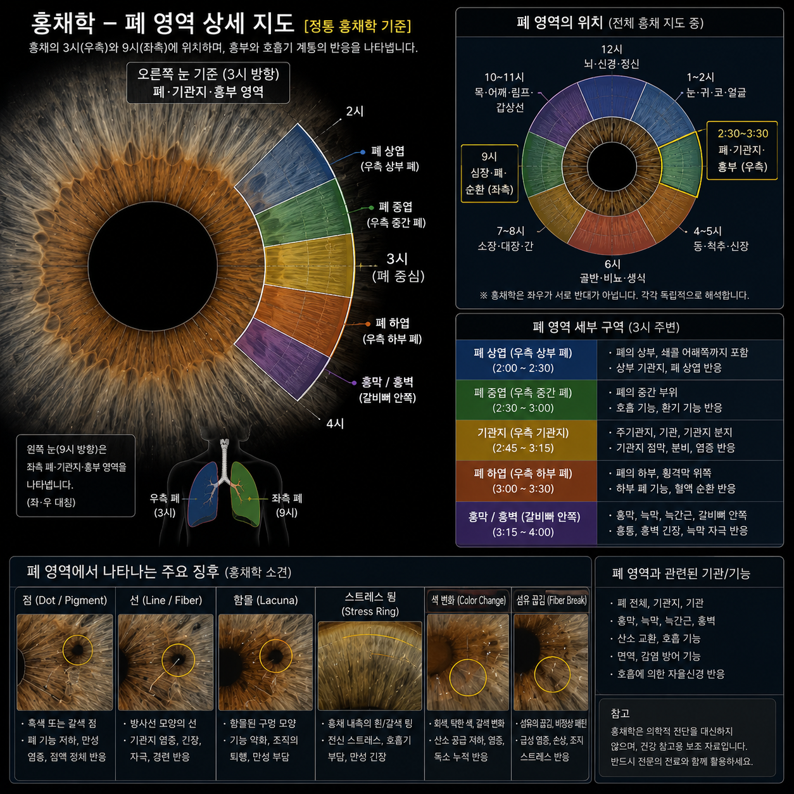

LEARNING LIBRARY
홍채학습
3시 방향 학습 자료
홍채 폐 영역 상세 지도
폐 영역 지도와 시간대별 지도는 개인 판독 결과가 아니라 위치 체계를 이해하기 위한 학습 자료입니다.
개인 결과는 문진, 생활습관, 병력 정보를 우선하고 홍채 관찰을 교차확인 자료로 반영합니다.

주요 학습 구역
학습 자료의 부위 표시는 건강관리 참고를 위한 전통 홍채학 체계이며 의학적 진단 근거로 사용하지 않습니다.